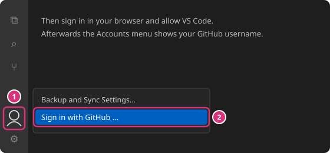
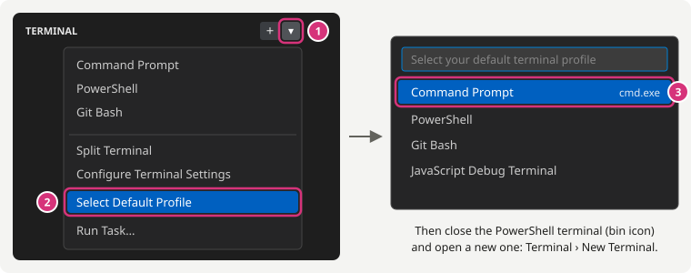
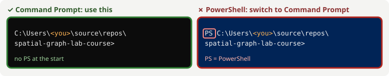

Page 7 of 15 · On your computer
Install the tools
Once, on the laptop you bring to class: your accounts and four programs. Tick each step when it is done. No programming experience is needed.
01Create or check your GitHub account
A free account, or one you already have.
Create or check your GitHub account
A free account, or one you already have.
- Create a free GitHub account, or sign in to your existing one.
- Verify your email address if GitHub asks.
- Note your GitHub username: you send it to your tutor in step 02.
Troubleshooting
My verification email hasn't arrived
- Check your spam or junk folder.
- Check that the email address you entered is correct.
- Use GitHub's option to resend the verification email.
I already have a GitHub account
Use it. You do not need another one.
02Join the course on GitHub
Anyone can copy the course; only invited students can send work back.
Join the course on GitHub
Anyone can copy the course; only invited students can send work back.
- Send your GitHub username to your tutorThe way your tutor asked, as early as you can.
- Accept the invitationFrom the e-mail GitHub sends, or at the course's invitations page (signed in to GitHub).
the course repository opens on GitHub without an invitation banner.
No invitation yet?
Go on: everything up to sending your branch to GitHub works without it. Invitations expire after 7 days: ask your tutor for a new one if yours has (Help).
03Install Visual Studio Code
The editor you work in.
Install Visual Studio Code
The editor you work in.
- Download VS Code for your computer and install it with the normal installer.
- Open VS Code.
Note. Choose Visual Studio Code (VS Code), not the separate Visual Studio.
Troubleshooting
I downloaded Visual Studio, not Visual Studio Code
- Go back to the official VS Code download page.
- Download Visual Studio Code, the lighter code editor.
- Run the installer and open Visual Studio Code.
04Sign in to GitHub in VS Code
So that VS Code and git can send your work to GitHub.
Sign in to GitHub in VS Code
So that VS Code and git can send your work to GitHub.
- Open the Accounts menuThe person icon at the bottom of VS Code's left bar.
- Sign in with GitHubYour browser opens: sign in and allow VS Code.
the Accounts menu shows your GitHub username.

And when I push for the first time?
Git may open a browser sign-in window once more: sign in and Authorize (picture).
05Install Git
Git keeps track of your changes and your branch.
Install Git
Git keeps track of your changes and your branch.
Windows
- Download Git for Windows.
- Run the installer (the
.exefile). Keep the default settings. - Restart VS Code.
Optional: the editor Git uses
On the installer page “Choosing the default editor used by Git” you may pick Visual Studio Code instead of Vim. Keep everything else as it is.
macOS
- Open Terminal (Finder › Applications › Utilities › Terminal, or search “Terminal” with Cmd+Space).
- Run
git --version. - If macOS asks to install Command Line Tools, accept and let it finish.
- Restart VS Code if it was open.
Check it: in VS Code, Terminal › New Terminal (on Windows, do step 06 first), then:
git --version
a line such as git version 2.50.1. Your number may differ.
Troubleshooting
Git is not recognised
- Close all VS Code windows and restart VS Code.
- Open Terminal › New Terminal and try
git --versionagain. - Still failing: install it again.
macOS asks me to install Command Line Tools
- Choose Install.
- Let it finish, then close and reopen Terminal and run
git --versionagain.
06Set up VS Code's terminal
The window where you type commands.
Set up VS Code's terminal
The window where you type commands.
In VS Code: Terminal › New Terminal. It opens at the bottom of the window.
Windows
Use Command Prompt, not PowerShell. Every Windows command on these pages is for Command Prompt. Make it the default once:
- In the terminal panel, click the arrow next to + › Select Default Profile.
- Choose Command Prompt.
- Close the PowerShell terminal (the bin icon) and open a new one: Terminal › New Terminal.


PS at the start.Why?
PowerShell refuses npm on many laptops (“running scripts is disabled”). Command Prompt runs it without changing any Windows setting.
macOS
VS Code opens zsh, the same as the Terminal app. Nothing to change.

%.How to run a command
Click in the terminal, paste the command (Ctrl+V, or right-clickCmd+V) and press Enter. One command at a time: each dark box on these pages is one command with its own Copy. More: Git basics › the terminal.
07Install Node.js (LTS)
It runs the app on your computer.
Install Node.js (LTS)
It runs the app on your computer.
Download the LTS installer from nodejs.org (Windows .msi, macOS .pkg) and run it. It brings npm, which installs and starts the app.
Or install with a command on Windows (optional)
In Windows Terminal:
winget install OpenJS.NodeJS.LTS
“winget is not recognised”: use the installer instead.
Restart VS Code, open Terminal › New Terminal and run, one at a time:
node --version
npm --version
two version numbers, such as v24.11.1 and 11.6.2, without an error. Any Node.js from v22.12 up works.
Troubleshooting
Node.js or npm is not recognised
- Restart VS Code after installing Node.js.
- Open Terminal › New Terminal and try again.
- Still failing: run the LTS installer again.
Windows PowerShell says running scripts is disabled
Make Command Prompt VS Code's terminal (step 06) and run it there. You do not need to change Windows security settings.
08Register for an AI coding agent
Codex, Claude Code or GitHub Copilot: one is enough.
Register for an AI coding agent
Codex, Claude Code or GitHub Copilot: one is enough.
Choose one AI coding agent that works in VS Code. No purchase is needed: GitHub Copilot Free costs nothing.
GitHub Copilot
- In VS Code, open Chat and follow the GitHub sign-in (or install GitHub Copilot from Extensions if asked).
- Activate Copilot Free if asked.
- Check that you can open Chat and choose Agent.
Free GitHub student benefits (optional)
Verified students may get more Copilot use for free: GitHub Education. While approval is pending, use Copilot Free.
OpenAI Codex
- Check that your ChatGPT plan or organisation gives Codex access.
- In VS Code, Extensions › the official Codex extension by OpenAI › install, sign in.
- Check that the Codex panel opens.
Claude Code
- Check that you have an eligible Claude plan (such as Pro or Max), an organisation account or API access. A free Claude chat account alone is not enough.
- In VS Code, Extensions › the official Claude Code extension by Anthropic › install, sign in.
- Check that the Claude Code panel opens.
Troubleshooting
I can't find Extensions in VS Code
View › Extensions, or the Extensions icon in the left bar.
The agent asks for payment or shows a usage limit
Do not buy anything. Use Copilot Free, or later continue with any AI chat in the browser (page 11).
every step on this page is ticked. Next: Clone the repository.
Ticks are saved only in this browser. More help: VS Code documentation · Pro Git book · GitHub documentation · Help.